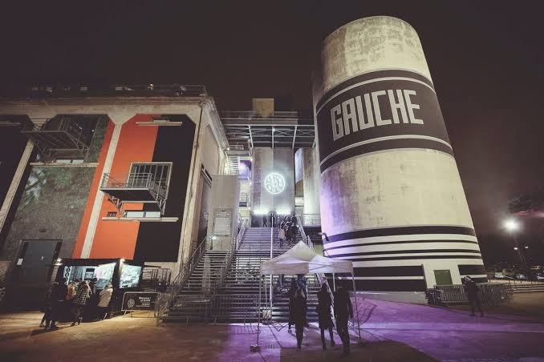

Le Sucre
Le Sucre
Le Sucre est ouvert toute l’année, les vendredis, samedis et dimanches, et les mardis gratuitement jusqu'à fin octobre. L’occasion de venir écouter les headliners d’aujourd’hui et de demain, perchés sur le rooftop de la Sucrière.
Démo : compteurs à titre indicatif.